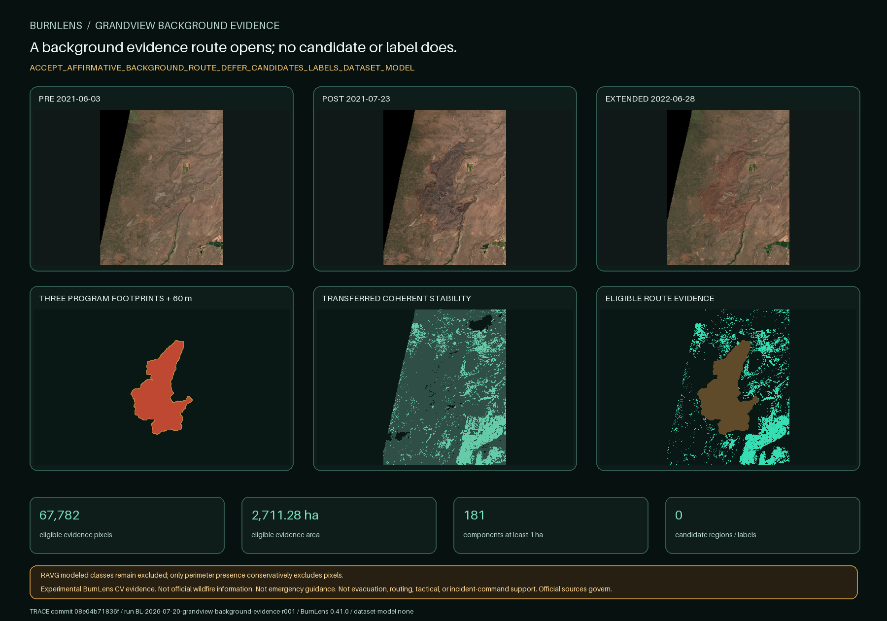

BURNLENS / PHASE TWO / ISSUE #503
A background evidence route opens; no candidate or label does.

Exact optical products
| Role | Product | Sensing time | Baseline |
|---|---|---|---|
| grandview-2021-pre | S2B_MSIL2A_20210603T184919_N0500_R113_T10TFQ_20230130T001253.SAFE | 2021-06-03T19:02:10.753344Z | 05.00 |
| grandview-2021-post | S2B_MSIL2A_20210723T184919_N0500_R113_T10TFQ_20230131T130926.SAFE | 2021-07-23T19:02:11.84911Z | 05.00 |
| grandview-2022-extended | S2B_MSIL2A_20220628T184919_N0510_R113_T10TFQ_20240628T114848.SAFE | 2022-06-28T19:02:15.788848Z | 05.10 |
The 05.00/05.10 processing difference is disclosed. Product-metadata BOA scaling and offsets plus actual content registration govern comparison.
Conjunctive evidence rule
Three-scene clear/numeric evidence; transferred four-signal near-anniversary stability; at least 7 of 9 stable neighbors; outside BAER, MTBS, and RAVG rasterized footprints; outside the 60 m source-boundary uncertainty buffer. No single signal is sufficient.
Outside-footprint status, nodata, SCL, or apparent stability is insufficient alone. The threshold set transfers unchanged; no threshold was searched against this result.
Only exact delivered perimeter geometry is used for conservative exclusion. RAVG modeled class meaning is not affirmative evidence because the exact delivery warns of sparse to no pre-fire tree cover.
Gate result
OPEN_BACKGROUND_EVIDENCE_ROUTE_FOR_SEPARATE_CANDIDATE_PROPOSAL
A separate deterministic region proposal followed by owner yes/no/uncertain review is permitted only if this route opens. This report creates neither.
Contains modified Copernicus Sentinel data 2021-2022, accessed through CDSE; Monitoring Trends in Burn Severity Project (U.S. Geological Survey and USDA Forest Service); USDA Forest Service.
No ground truth, field validation, official unburned map, owner response, dataset, split, baseline, model, accuracy, endorsement, or operational readiness exists.
Trace: commit 08e04b71836ffbcb8d59761c53586ece6f85687f · BurnLens 0.41.0 · run BL-2026-07-20-grandview-background-evidence-r001 · label schema burn-scar-five-state-schema-v0.1.0 · dataset/model none.